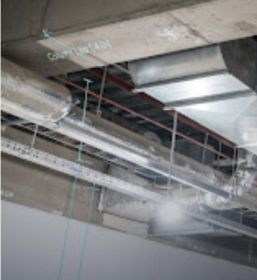
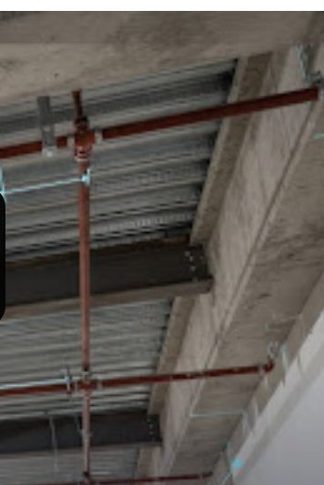

flagOpen issuepublished_with_changesCorrection submittedlocation_onUnit 405 · Chase B ceilingHVACFIXTURE RESULT
ISS-031 · Supply duct routed east of grid C-12; M-402 Rev 3 routes it west
Owner Apex Mechanical (Marco Rossi) · due Tue, Oct 6 · 17:00 · confirmed by Sarah Jenkins on Oct 3
1Potential finding
Oct 3 · 14:12 · check run CR-5310 on UPD-2240
2Confirmed · open
Oct 3 · 15:58 · S. Jenkins assigned Apex Mechanical
3Correction submitted
Oct 6 · 09:40 · UPD-2293 · rechecked 09:43
4Resolution decision
Waiting on you — a new photo alone doesn't close an issue
Before and after
Before / aftervs M-402 Rev 3All 5 photos

Before · Oct 3 · UPD-2240Duct east of C-12 (observed)
Generated sample image

After · Oct 6 · UPD-2293Run now west of C-12 (apparent)
Generated sample image
Requested views provided: 2 of 2 (from doorway; from below chase). Location confirmed by QR at unit door.
Recheck on correction evidence
Check run CR-5602 · Oct 6 09:43| Check | Evidence | Before (Oct 3) | After (Oct 6) |
|---|---|---|---|
| Apparent duct routing vs M-402 Rev 3 duct-routing v0.2 · review only | checkAdequate | reportPotential discrepancy | check_circleNo discrepancy detected |
| Sprinkler branch FP-214 visible & unobstructed visual only | visibility_offPartly visible | add_a_photoInsufficient | add_a_photoInsufficient |
| Clearance distance to sprinkler branch | — | helpUnsupported — needs measurement on site | |
“No discrepancy detected” is scoped to the routing check above. It isn't a clearance measurement, a code determination or a fire-protection sign-off.
Resolution requirements · set when confirmed, Oct 3
- Reroute supply duct west of grid C-12 per M-402 Rev 3. check_circleAI: no discrepancy detected
- Photos from the doorway and from below Chase B. checkProvided
- Fire-protection sub confirms branch line is clear. Not recorded
Messages
Marco Rossi · Apex MechanicalOct 6 · 09:40 · with UPD-2293
“Rehung west of C-12, moved trapeze H-14/H-15.” Worker claim
SystemOct 3 · 16:02
In-app notification sent to Apex Mechanical. SIMULATED DELIVERY IN DEMO